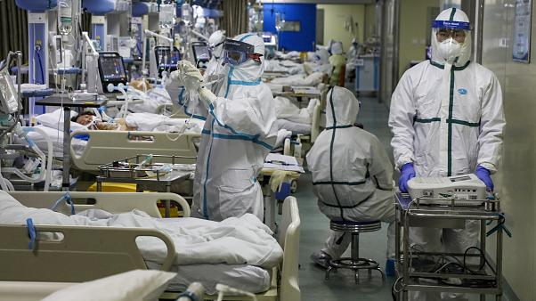

COVID-19 REPORTS:
- Amidst the prevalence of the Covid-19 pandemic, the Indian Medical Association said that 798 doctors died during the second wave of Covid-19 across the country of which maximum 128 doctors lost their lives in Delhi, followed by Bihar at 115.
- As per the official note by the IMA, the number of doctors who lost their lives in the pandemic in Delhi stands at 128, followed by Bihar at 115 and Uttar Pradesh at 79.
- States like Maharashtra and Kerala where the prevalence of the Delta Plus variant of Covid-19 is on a rise also reported deaths of doctors in double digits. Maharashtra reported 23 doctor deaths and Kerala reported 24 deaths.
- Pondicherry reported the lowest deaths of doctors by logging one death only. Hours after Prime Minister Narendra Modi on Sunday praised doctors for going out of their way to extend help to people during the coronavirus pandemic, IMA President Dr JA Jayalal said that the PM has assured that doctors will be respected, protected and safeguarded.
- Like every year, the country celebrated National Doctors' Day on July 1 to honour the contributions of the doctors. The first National Doctor's day was celebrated in the country in July 1991.
- "PM Modi ensured that doctors should be respected, protected and safeguarded. He also emphasised the need for vaccination. We're celebrating this year's National Doctors' Day (July 1) in remembrance of the veteran Dr BC Roy. We're so much pleased that PM Modi greeted the medical fraternity for the Doctors' Day," the IMA President had said.
- On June 25, the Indian Medical Association (IMA) informed that 776 doctors lost their lives in the second wave of Covid. According to the IMA Covid registry on June 25---in the state-wise doctors martyrs list, Bihar saw the maximum number of 115 deaths, followed by Delhi at 109, Uttar Pradesh 79, West Bengal 62, Rajasthan 44, Jharkhand 39, and Andhra Pradesh 40.
TABLE REPRESENTATION:
IMA COVID REGISTRY-SECOND WAVE STATE WISE DOCTORS MARTYRS
| S.NO |
STATES |
NUMBER OF DEATH |
| 01 |
Andhra Pradesh |
40 |
| 02 |
Assam |
10 |
| 03 |
Bihar |
115 |
| 04 |
Chattisgarh |
7 |
| 05 |
Delhi |
128 |
| 06 |
Gujarat |
39 |
| 07 |
Goa |
2 |
| 08 |
Haryana |
19 |
| 09 |
Jammu and Kashmir |
3 |
| 10 |
Jharkand |
39 |
| 11 |
Karnataka |
9 |
| 12 |
Kerala |
24 |
| 13 |
Madhya Pradesh |
16 |
| 14 |
Maharashtra |
23 |
| 15 |
Manipur |
6 |
| 16 |
Odisha |
36 |
| 17 |
Pondicherry |
1 |
| 18 |
Punjab |
3 |
| 19 |
Rajasthan |
44 |
| 20 |
Tamil Nadu |
51 |
| 21 |
Telangana |
37 |
| 22 |
Tripura |
2 |
| 23 |
Uttara Pradesh |
79 |
| 24 |
Uttarakhand |
2 |
| 25 |
West Bengal |
62 |
| 26 |
Unknown |
1 |
|
Total Martyrs |
798 |